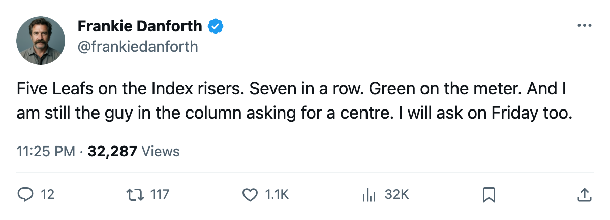
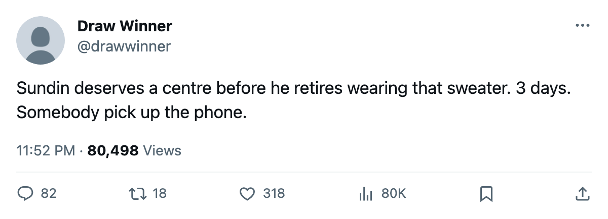

TOR
TORDANFORTH: Five on the Index, seven in a row, three days, and I still want a centre
The Bureau has five Leafs climbing its risers list, the streak says seven, and the one slot I have been writing about since October is the one slot nobody has touched
 Frankie DanforthColumnist · Queen City Telegram
Frankie DanforthColumnist · Queen City Telegram
Code Green

The piece
The Bureau's Development Index has five Toronto players among its twenty risers this edition.  Marian Gaborik98 is up six, alone at the top.
Marian Gaborik98 is up six, alone at the top.  Barret Jackman86,
Barret Jackman86,  Rostislav Klesla84, and
Rostislav Klesla84, and  Rick Nash83 each sit at +5.
Rick Nash83 each sit at +5.  Brad Richards87 is up four. That is a quarter of the list in one sweater.
Brad Richards87 is up four. That is a quarter of the list in one sweater.
I will grant the good news. Five players climbing while the record reads 51-12-4, the streak reads 7, and the lead over  Boston Bruins reads 30 points. The Panic Meter sits at Green. It should sit at Green.
Boston Bruins reads 30 points. The Panic Meter sits at Green. It should sit at Green.
What Green does not measure is April. What Green does not measure is the 1C column.
The slot table has  Mats Sundin91 at 41C on the power play and H2 at even strength. Brad Richards is 32C at even strength, 2RW on the power play. Petr Chlup86 is 42C, H4. Chlup is 19 and has 50 points in 61 games, the best line a teenager has put up on this roster. He does not play 20 minutes against the other team's top two lines in a playoff series. Nobody on this sheet does.
Mats Sundin91 at 41C on the power play and H2 at even strength. Brad Richards is 32C at even strength, 2RW on the power play. Petr Chlup86 is 42C, H4. Chlup is 19 and has 50 points in 61 games, the best line a teenager has put up on this roster. He does not play 20 minutes against the other team's top two lines in a playoff series. Nobody on this sheet does.
Three days is not a long time
What the calendar has as the trade deadline falls on 2005-03-19. That is 3 days from this column. Three days to find a centre. Three days to find one who fits, who can be had for pieces you are willing to send, who clears waivers, who wants Toronto.
The desk has no confirmed move. The desk has no name. The desk has a column that says the same thing in March that it said in October: the second centre behind Sundin is the problem this roster cannot solve by winning more regular-season games against Buffalo.
The shots say what they say
17 at Vancouver, 27 against. The Leafs won by 2. This is not a new pattern. In the last 7 wins: 5 goals on 16 shots at Calgary, 6 on a road date in Edmonton, 3 on 17 shots here. The goaltending holds, the power play converts, the shooting percentage runs hot. Shooting percentage is a coin. Goaltending holds for 20 minutes, for a period, for a night. The question I keep asking is what happens when neither holds and you need a first-line centre to make a play in the fifth minute of the third.
The answer is still: nobody makes it for you.
What the Index tells me
Gaborik at 85 points and +6 on the form term. Jackman at 33 points and +5, skating 30.3 minutes a night at 24 years old. Klesla at 27 points and +5, moving into the second power-play unit. Nash at 35 points and +5 in 59 games. Richards at 63 points and +4, carrying 16.6 minutes on the second line.
Five men climbing. The sixth man I want is not on the roster. He is on someone else's, and that someone else has to say yes in 72 hours.
Green means no panic. Green also means no excuse. A club with 116 points and a 30-point cushion has resources. It has prospects, it has picks, it has cap room with 5 games of salary off the books already. The only thing it does not have is a phone call coming back with yes.
I will keep writing the column until the column changes. Seven wins later, it says the same thing.

